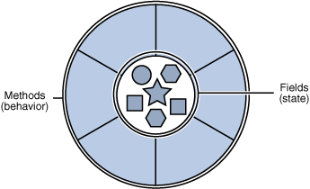
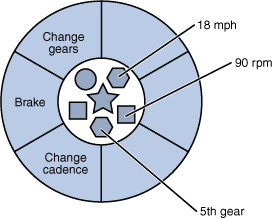

|
Real-world objects share two characteristics: They all have state and behavior. Dogs have state (name, color, breed, hungry) and behavior (barking, fetching, wagging tail). Bicycles also have state (current gear, current pedal cadence, current speed) and behavior (changing gear, changing pedal cadence, applying brakes). Identifying the state and behavior for real-world objects is a great way to begin thinking in terms of object-oriented programming.
Take a minute right now to observe the real-world objects that are in your immediate area. For each object that you see, ask yourself two questions: "What possible states can this object be in?" and "What possible behavior can this object perform?". Make sure to write down your observations. As you do, you'll notice that real-world objects vary in complexity; your desktop lamp may have only two possible states (on and off) and two possible behaviors (turn on, turn off), but your desktop radio might have additional states (on, off, current volume, current station) and behavior (turn on, turn off, increase volume, decrease volume, seek, scan, and tune). You may also notice that some objects, in turn, will also contain other objects. These real-world observations all translate into the world of object-oriented programming.

A software object.
Software objects are conceptually similar to real-world objects: they too consist of state and related behavior. An object stores its state in fields (variables in some programming languages) and exposes its behavior through methods (functions in some programming languages). Methods operate on an object's internal state and serve as the primary mechanism for object-to-object communication. Hiding internal state and requiring all interaction to be performed through an object's methods is known as data encapsulation — a fundamental principle of object-oriented programming.
Consider a bicycle, for example:

A bicycle modeled as a software object.
Bundling code into individual software objects provides a number of benefits, including:
|